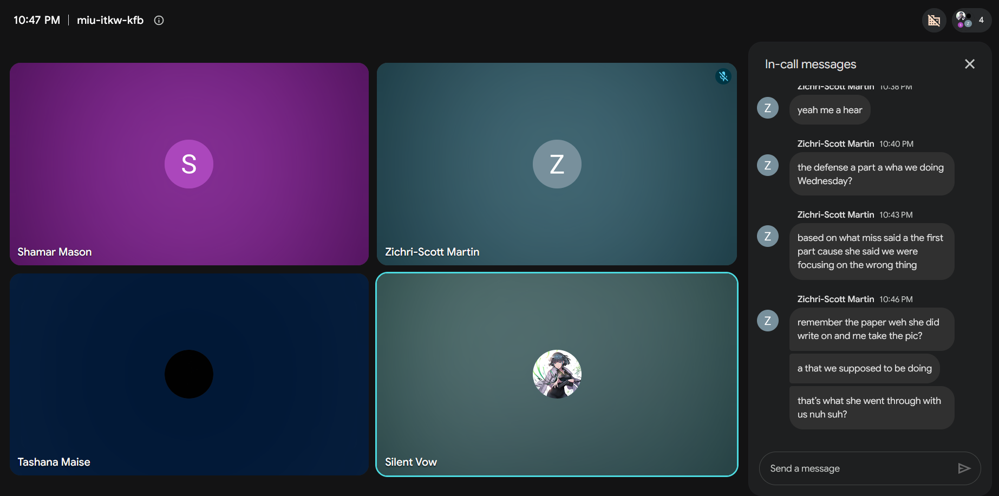
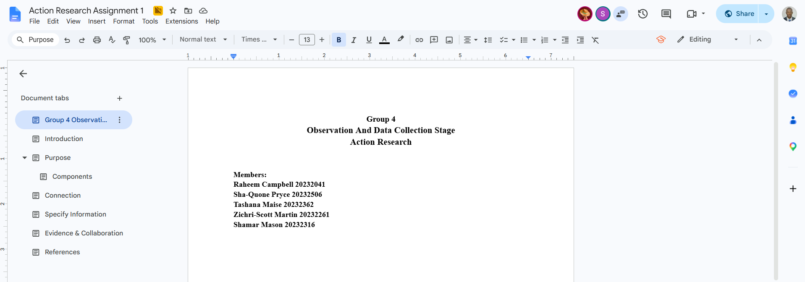
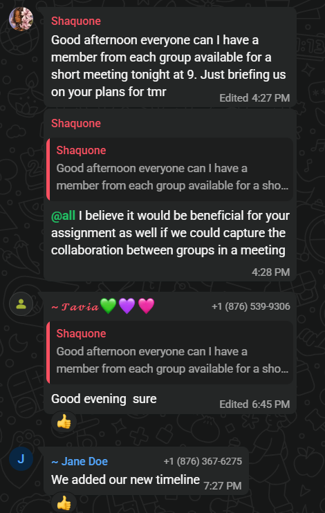
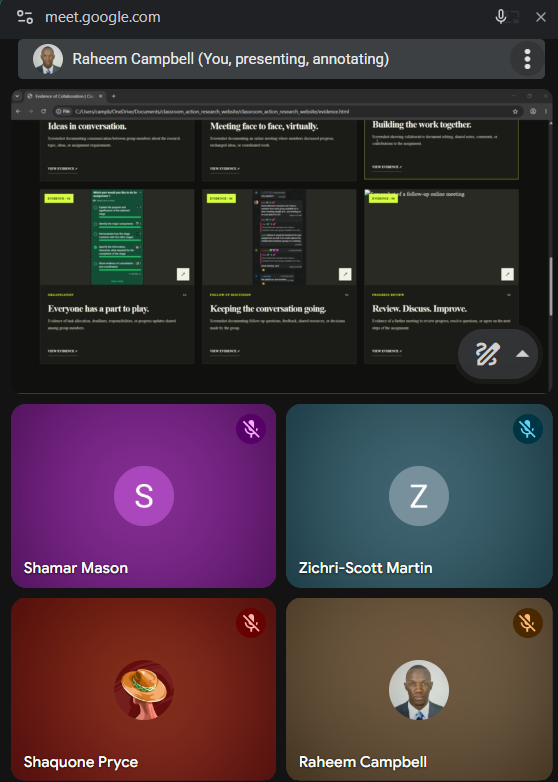

.png) EVIDENCE / 01
EVIDENCE / 01
Ideas in conversation.
Screenshot documenting communication between group members about the research topic, ideas, or assignment requirements.
A visual record of the communication, discussions, planning, and teamwork behind our Classroom Action Research project. Every screenshot captures a part of our collaborative process.
EXPLORE THE EVIDENCE ↓Classroom Action Research involves more than developing ideas individually. Communication, shared planning, discussion, and feedback help group members coordinate responsibilities and work towards a common goal.
This collection presents screenshots and other records of our group's collaboration throughout the project. Each item is accompanied by a caption explaining what it documents and how it relates to our work.
Select a category to explore the evidence. Click any screenshot to enlarge it.
EVIDENCE / 01
Screenshot documenting communication between group members about the research topic, ideas, or assignment requirements.

EVIDENCE / 02Screenshot documenting an online meeting where members discussed progress, exchanged ideas, or coordinated work.

EVIDENCE / 03Screenshot showing collaborative document editing, shared notes, comments, or contributions to the assignment.
 EVIDENCE / 04
EVIDENCE / 04
Evidence of task allocation, deadlines, responsibilities, or progress updates shared among group members.

EVIDENCE / 05Screenshot documenting follow-up questions, feedback, shared resources, or decisions made by the group.

EVIDENCE / 06Evidence of a further meeting to review progress, resolve questions, or agree on the next steps of the assignment.
No evidence has been added to this category yet.
The screenshots and records presented here provide a visual account of the group's communication and coordination. Together, they can demonstrate how members exchanged ideas, shared responsibilities, reviewed work, and organised their contributions to the research project.
The reflection should be updated to describe what the evidence actually demonstrates, including any challenges encountered and how the group addressed them.